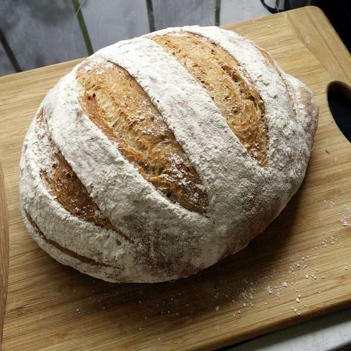

Esta receta es recomendada hacer un día que te vas a quedar en la casa, pues la masa requiere constante intervención, aunque cada intervención es de segundos, se hace muchas veces durante la mañana.

Alimenta la masa madre natural que tengas guardada. A la mañana siguiente verás que está llena de burbujas y haya ganado volumen.
Dándole ese tiempo de amasado y reposo hasta que esté amasado del todo.
El amasado de 15 segundos consiste en estirar la masa, plegar la masa en dos, girar 90º y repetir hasta que vaya ganando elasticiad.
Para facilitar el amasado aceitar generosamente la superficie. Repetir este proceso unas 4 veces, al final casi no será necesario aceitar la superficie.
Dejar reposar durante 3 horas, a mitad del proceso (1 hora y media), opcionalmente se le puede dar un pliegue en ambos sentidos para tensar la masa.
Cuando ya tenga volumen, se form la hogaza. Esta vez, enharinando la mesa, se pone la masa y se doblan las orillas hacia el centro, como doblando los brazos de una estrella hacia el centro; esa será la parte abajo del pan.
Poner un paño abierto en una fuente para recibir la hogaza. Enharinar el paño abundantemente para que la masa no se pege incluso después de horas de reposo. Se pone la masa con la parte tensa y lisa hacia abajo.
Se deja leudar la masa durante 3 o 4 horas más. El tiempo dependerá de la masa madre y de la temperatura ambiente. Cuando haya casi doblado su volumen está lista.
Precalentar el horno a 250ªC (al máximo), idealmente poner un cacharro de cerámica con piedra pómez adentro también.
Con el horno caliente echar agua en el cacharro para formar un ambiente húmedo en el horno. Poner la hogaza sobre la lata y hacer cortes de buena profundidad, que expongan la miga, para guiar la expansión del pan. Meter el pan y dejar en alta temperatura por 10 minutos.
Al cabo de los 10 minutos, retirar el cacharro con agua y bajar la temperatura a 200ºC.
Hornear durante 50 minutos más.
Luego de un total de una hora de horneado (10 + 50 minutos), sacar el pan.
La recomendación general es envolver en un paño y dejar sobre una rejilla hasta el día siguiente. Pero yo nunca me aguanto, prefiero pegarle un corte en un lado y comerme un crujiente y aromático trozo de pan con mantequilla y otro con aceite de oliva.
…y otro con palta.
Oink!